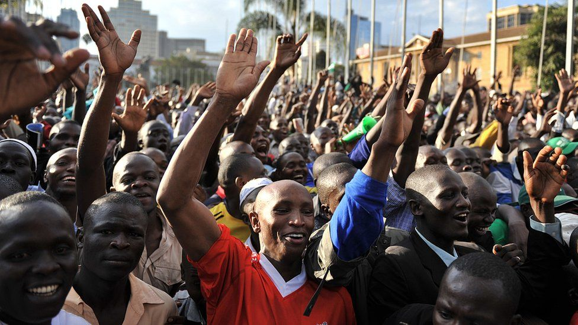
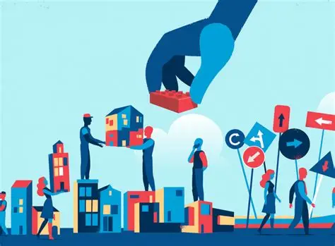

Accessibility
Sustainable Centrist Leadership for All
Let’s Restore and Progressively Transform Kenya into the Nation of Opportunities!


Let’s Restore and Progressively Transform Kenya into the Nation of Opportunities!